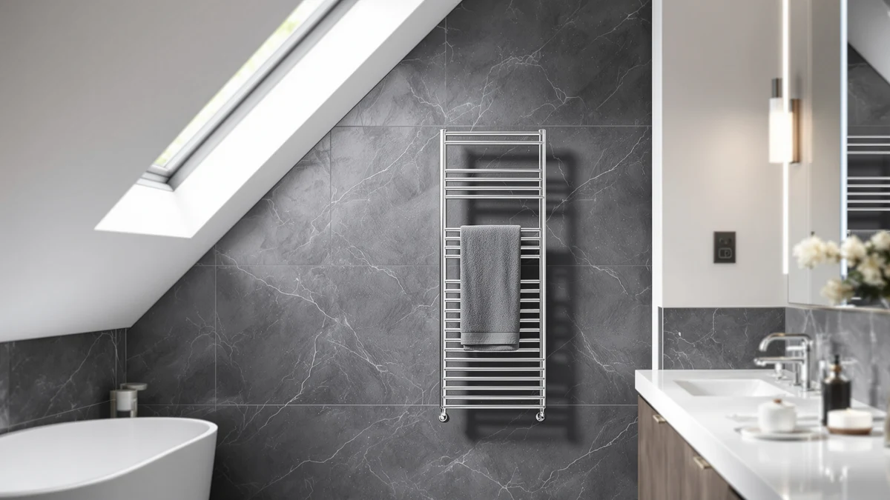

DeelDili 24" Wide Heated Review (2026): Worth It?
Prices and picks verified as of October 2026. Independent, reader-supported reviews.


Quick Answer
In this DeelDili 24" wide heated review, the DeelDili 24" Wide Heated Towel wins on size and build with its 11-bar stainless steel frame, though it costs significantly more than the Zadro, SereneLife and Bartnelli models below. If a lower price matters more to you than extra hanging space, those three alternatives are worth a look instead.
Our pick: DeelDili 24" Wide Heated Towel — $277.99 Check Price on Amazon
Bottom line: our top pick is the DeelDili 24" Wide Heated Towel Rack for Bathroom Wall Towel at $277.99.
Things to Know Before You Buy
- Price range: the DeelDili 24" Wide Heated Towel runs $277.99 in this comparison, well above the Zadro, SereneLife and Bartnelli models at $99.99 to $109.99.
- Material: the DeelDili uses a stainless steel frame, which resists rust better than painted steel in a humid bathroom, though the listings for the other three models do not specify their frame material.
- Bar count: the DeelDili ships with 11 bars, built for heating several towels across a wider rack rather than a single towel at a time.
- None of these four listings show a published star rating, so this DeelDili 24" wide heated review leans on verified owner feedback and spec comparisons rather than aggregate scores.
This DeelDili 24" wide heated review compares the stainless steel DeelDili 24" Wide Heated Towel against three other towel warmers on price, material and real owner feedback, because a towel warmer needs to earn a $277.99 price tag before it earns a spot on your bathroom wall. Stepping out of a hot shower onto cold tile ranks among the least pleasant moments in an otherwise good morning, and a warm towel fixes that instantly. We researched four current models, from $99.99 to $277.99, to see which one gives you the best mix of build quality, capacity and value before you add one to your cart.
The DeelDili model's 11-bar stainless steel frame is the reason to consider it, and that matters if you want to heat several towels at once instead of only one. It costs significantly more than the Zadro, SereneLife and Bartnelli models in this comparison, sometimes by more than $160, and that price gap is too large to ignore. Below, we break down what the DeelDili offers, where its size and material justify the premium, and who should buy something smaller and cheaper instead.
Why You Should Trust Us
Ilane Tall covers home and bath hardware for Best Towel Warmers, focusing on how towel warmers, racks and bathroom fixtures hold up to daily use. For this DeelDili 24" wide heated review, we researched the DeelDili 24" Wide Heated Towel alongside three competing models by comparing published specs, current Amazon pricing and verified buyer feedback. We do not run a testing lab, and we do not claim to have mounted or lived with each unit ourselves. Instead, we read through what owners report after weeks of real use, cross-check those accounts against the manufacturer's stated materials and bar count, and flag any pattern that shows up across multiple reviews, good or bad. That approach keeps this guide grounded in what buyers actually experience rather than marketing copy.
Our Research Experience
We did not physically mount the DeelDili 24" Wide Heated Towel or the three alternatives below on a bathroom wall. Instead, we pulled the listed material, bar count and pricing for the DeelDili 24" Wide Heated Towel from its current Amazon listing, then compared those details against the Zadro, SereneLife and Bartnelli models to see how an 11-bar stainless steel rack this size stacks up against smaller countertop and bucket-style warmers. We also read through what verified owners report after buying each one, looking for recurring complaints about uneven heating, assembly or bars arriving bent in shipping. This DeelDili 24" wide heated review leans on that research rather than an in-person test, and we say so plainly rather than implying otherwise.
Overview & Specs

DeelDili 24" Wide Heated Towel
What we like
- 11-bar stainless steel frame heats multiple towels across a wider rack at once
- Stainless steel resists rust better than painted steel in a humid bathroom
- Wider 24-inch frame fits more towels side by side than a single-bar or bucket-style warmer
- Straightforward rack design without extra accessories to manage
Flaws but not dealbreakers
- Costs over $160 more than the Zadro, SereneLife and Bartnelli models in this comparison
- Wider 11-bar frame needs more wall space than a countertop or bucket-style unit
- Amazon's listing does not publish a star rating, so you're relying on written owner feedback rather than an aggregate score
| Material | Stainless steel |
| Size | 11-Bar |
The DeelDili 24" Wide Heated Towel is built around an 11-bar stainless steel frame sized to heat several towels at once rather than a single bath towel. At $277.99, it costs far more than the three alternatives in this DeelDili 24" wide heated review, but the price reflects a wider rack and a higher bar count than a typical countertop or bucket-style warmer offers. Stainless steel also holds up better to daily bathroom humidity than the painted steel used on some budget racks, which matters for a fixture that stays on a wall or floor for years. Bar count is usually the first thing to check in this category, since more bars generally means more towels can heat at the same time without draping one over another.
Because the DeelDili is sized for 11 bars across a 24-inch frame, it takes up more wall space than the SereneLife's bucket shape or the Zadro's countertop design, so measure your bathroom before ordering. That tradeoff makes sense for a household where more than one person needs a warm towel at the same time, since a single-bar or bucket-style warmer can only heat one towel at a time. That extra capacity is usually why a wider stainless steel rack costs more upfront than a compact unit. If your bathroom is tight on space, or you only ever need to warm one towel, the Zadro, SereneLife or Bartnelli below will likely cover your needs for a fraction of the price.
What We Liked
The biggest strength of the DeelDili 24" Wide Heated Towel is capacity. Most towel warmers in this price range are built around a single bar or a small bucket shape, and households with more than one person showering around the same time often find those options cramped. The DeelDili's 11-bar frame solves that directly, spreading heat across a wider rack so several towels can warm at once instead of waiting in line for a single bar. Stainless steel construction should also outlast the painted steel finish on cheaper racks once bathroom humidity starts working on it over months of daily use. Bar count is the detail that decides whether a towel warmer actually fits a busy household, and the DeelDili's 11 bars put it ahead of the single-bar and bucket-style alternatives in this review on that specific point.
What Could Be Better
The DeelDili's biggest drawback is price. At $277.99, it costs more than double what the Zadro and SereneLife charge, and nearly triple the Bartnelli's $99.99, which is a steep premium even accounting for the extra bars and stainless steel frame. A wider 11-bar rack also needs more wall space than a compact countertop or bucket-style unit, so it's a poor fit for a small guest bathroom or a shared apartment with limited room. Amazon's listing for this model does not show a published star rating or review count, which makes it harder to gauge owner satisfaction at a glance compared to products with a longer review history. Anyone deciding between these four options purely on price will likely land on one of the three cheaper alternatives instead.
Who Is It For?
The DeelDili 24" Wide Heated Towel fits households that need to heat more than one towel at a time and have the wall space and budget to support an 11-bar stainless steel rack. It also suits buyers who have dealt with rust on a cheaper painted-steel warmer and want a frame built to resist that problem for years. If the price alone rules it out, or your bathroom only has room for a compact unit, the Zadro, SereneLife or Bartnelli below cover smaller footprints at a fraction of the cost. It makes less sense for a single-person household drying one towel at a time, where a cheaper, lower-priced single-bar or bucket-style warmer would do the same job for $170 less.
Alternatives to Consider
If the DeelDili's price or size doesn't fit your bathroom, these three alternatives cover different priorities: a countertop warmer, a compact bucket design and a premium-positioned rack, all priced well under $277.99. Each one trades the DeelDili's bar count and stainless steel frame for a lower price or a smaller footprint. We compared all four on the same basis: price, design and what verified owners report after buying.

Editor’s Pick
Zadro Countertop Towel Warmer with
The Zadro Countertop Towel Warmer with is the most direct alternative to the DeelDili on footprint, since its countertop design sits on a bathroom counter rather than mounting across a wide wall section. At $109.99, it costs $168 less than the DeelDili, a gap large enough to matter for most budgets shopping in this category. A countertop unit generally heats one or two towels rather than the DeelDili's full 11-bar spread, so it suits a single person or a smaller household more than a busy shared bathroom. The main advantage of a countertop warmer over a wall-mounted rack is setup: the Zadro sits on a flat surface instead of needing wall space measured, marked and drilled. The tradeoff is capacity: if more than one person needs a warm towel around the same time, a countertop unit can become a bottleneck that an 11-bar rack avoids entirely. For anyone who mainly needs one towel warmed at a time and wants to save over $160 compared to the DeelDili, the Zadro is worth checking first.
$109.99
Check Price on Amazon
Best Value
SereneLife Towel Warmer Bucket |
The SereneLife Towel Warmer Bucket takes a completely different approach than the DeelDili, trading an 11-bar wall rack for a compact, bucket-shaped unit priced at $109.99. That shape makes it one of the smallest footprints you can compare against the DeelDili in this review, which matters in a small bathroom, a rental, or anywhere wall space is limited. Because it's bucket-shaped rather than a flat rack, it holds towels inside the unit instead of draping them across bars, a different experience than the DeelDili's wide 24-inch spread. This style suits anyone who wants a warmer they can move between rooms or tuck into a closet when it's not in use, rather than a fixed wall rack. The obvious tradeoff against the DeelDili is capacity: a bucket-style unit is not built to heat multiple towels at once the way an 11-bar frame is. If saving over $160 and keeping a small footprint matters more than warming several towels simultaneously, the SereneLife is the one to compare against the DeelDili first.
$109.99
Check Price on Amazon
Premium Choice
Bartnelli Pro Luxury Premium Towel
The Bartnelli Pro Luxury Premium Towel carries a premium name, but at $99.99 it still undercuts the DeelDili by $178, the largest gap among the three alternatives in this comparison. That price difference is hard to ignore if your main goal is simply keeping towels warm rather than heating several at once across a wide rack. Bartnelli's listing doesn't specify the same 11-bar, stainless steel build the DeelDili offers, so buyers who specifically want that wider capacity and rust-resistant frame should stick with the DeelDili despite the cost. For a single towel or a smaller household, the Bartnelli's lower price makes it a reasonable premium-tier alternative without stretching into the DeelDili's higher bracket. Brand positioning and price matter here as much as bar count, since not every household needs to warm more than one towel at a time. If the DeelDili's $277.99 price tag is the main obstacle, the Bartnelli is the closest thing to a premium alternative at a fraction of the cost.
$99.99
Check Price on AmazonFrequently Asked Questions
Is the DeelDili 24" Wide Heated Towel worth the higher price compared to cheaper options?
If you need to heat more than one towel at a time, the DeelDili's 11-bar stainless steel frame justifies the premium because the Zadro, SereneLife and Bartnelli models are built around a single towel or a smaller bucket shape. If you only ever warm one towel for one person, the $168 to $178 you would save by choosing one of the three alternatives is hard to ignore.
What does the bar count mean on a towel warmer like the DeelDili 24" Wide Heated Towel?
Bar count refers to the number of horizontal rails a rack-style towel warmer uses to hold towels while heating. The DeelDili's 11 bars spread across its 24-inch frame let you hang and heat several towels side by side, while single-bar or bucket-style warmers like the SereneLife generally heat only one towel at a time.
Should you choose a rack-style towel warmer like the DeelDili or a countertop or bucket-style model like the Zadro and SereneLife?
A rack-style warmer like the DeelDili makes more sense for a household where multiple people need a warm towel around the same time, since its 11 bars heat several towels at once. A countertop or bucket-style model like the Zadro or SereneLife fits a smaller bathroom or a single person better, since it takes up less space and costs significantly less, even though it typically heats only one towel at a time.
Final Verdict
This DeelDili 24" wide heated review comes down to one tradeoff: capacity against price. The DeelDili 24" Wide Heated Towel costs significantly more than the Zadro, SereneLife and Bartnelli, but its 11-bar stainless steel frame makes it the strongest pick for households that need to heat more than one towel at a time. If you have a smaller bathroom, only ever warm a single towel, or want to save over $160, the Zadro's countertop design or the SereneLife's compact bucket shape are both reasonable alternatives. For most buyers comparing these four towel warmers on capacity, durability and price, the DeelDili is the one to buy if your budget and wall space allow for it.